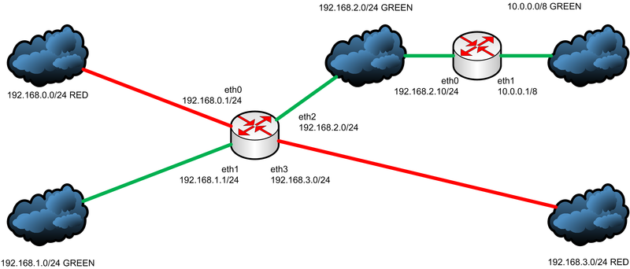

Сеть в Linux¶
Маршрутизация в Linux¶
Общая информация¶
Посмотреть таблицу маршрутизации можно с помощью следующих команд:
# Базовый вывод
ip route
# Вывод определенной таблицы
ip route list table main
# Другие команды
route / routel
Вывод ip route:
default via 192.168.1.1 dev ens18 onlink
192.168.1.0/24 dev ens18 proto kernel scope link src 192.168.1.100
---or---
default via 192.168.0.1 dev wlp0s2 proto dhcp src 192.168.0.100 metric 600
192.168.0.0/24 dev wlp0s2 proto kernel scope link src 192.168.0.100 metric 600
default- целевой IP-адрес или подсеть для которых создается маршрут (в данной строке означает вариант по умолчанию, т.е. любой адрес);via 192.168.1.1- IP-адрес шлюза, через которого можно будет добраться до целевого IP-адреса;dev ens18- сетевой интерфейс, через который будет осуществляться маршрут;onlink- указание, что шлюз находится в той же сети, что и указанный IP-адрес;proto kernel- протокол, который использовался для установки маршрута (прим.kernel- маршрут установлен ядром,dhcp- маршрут установлен сервисом DHCP,static- прописан вручную);scope link- область видимости маршрута:global- маршрут доступен для всех интерфейсов и может использоваться для маршрутизации пакетов в глобальной сети;link- маршрут доступен только для устройств в одной локальной сети (на одном канале);host- маршрут предназначен только для одного хоста.
src 192.168.1.100- исходный IP-адрес, через который будут идти исходящие пакеты;metric 600- приоритет маршрута (чем ниже значение - тем выше приоритет);table 0- номер или имя таблицы, куда будет добавлен маршрут.
Для отправки пакетов ядро подбирает наиболее конкретный маршрут, т.е. тот где самая длинная маска.
Настройка маршрутов осуществляется при помощи приведенной выше команды ip route.
- Добавление правила:
ip route add 192.168.10.112 via 192.168.1.1 - Изменение правила:
ip route change 192.168.10.112 via 192.168.0.1 dev eth0 onlink - Удаление правила:
ip route del 192.168.10.112 via 192.168.0.1 dev eth0 onlink
Маршруты при использовании данной команды будут удаленны после перезагрузки! Чтобы маршруты сохранялись после перезапуска, можно прописать их в файл
/etc/network/interfacesв блоке необходимого интерфейса (up- запуск команды во время включения интерфейса,post-up- запуск команды после успешного включения интерфейса,pre-down- запуск команды перед отключением интерфейса,down- запуск команды во время выключения интерфейса):post-up ip route change default via 192.168.1.1 dev ens18 src 192.168.1.111
Типы маршрутов и таблицы маршрутизации¶
Данный раздел написан по материалам следующей статьи.
Типы маршрутов:
unicast- обычный маршрут.unreachable- запрещающий маршрут (отправителю пакетов, попавших на этот маршрут, будет отослан icmp-пакет с сообщением о недоступности:host unreachable).blackhole- пакет на этом маршруте будет молча отброшен.prohibit- тоже самое, что иunreachable, только будет отправлено другое сообщение:communication administartively prohibited.local- адрес назначения находится на данном хосте (после того, как выяснится, что пакет попадает на этот маршрут, будет производится поиск подходящего сокета для него).broadcast- широковещательный маршрут (для входящих пакетов, попадающих на этот маршрут, практически нет отличий от маршрутаlocal, за исключением проверок на игнорирование широковещательных пакетов, для исходящих же есть небольшое отличие: в заголовке канального уровня, так же выставляется широковещательный адрес назначения при использовании широковещательных сетей).throw- специальный маршрут управления, используемый совместно с установленными политиками (без политик, это маршрут эквивалентенunreachableи будет отправлять сообщение:net unreachable).multicast- специальный тип, используемый для многоадресной маршрутизации (отсутствует в обычных таблицах маршрутизации, можно увидеть если вызвать таблицуall).
Таким образом, исходя из списка выше, для маршрутизации транзитных пакетов достаточно наличия маршрута типа unicast, а для того, чтобы хост мог отвечать на пакеты, нужны еще маршруты типов local и broadcast(опционально). Еще следует учесть то, что нужны также маршруты direct-connected сетей для того, чтобы обеспечить связность с соседними маршрутизаторами.
Маршруты сгруппированы в таблицы маршрутизации. По-умолчанию, изначально в системе присутствуют три таблицы:
local(255) - в данной таблице находятся локальный и широковещательные маршруты. Эта таблица обслуживается автоматически и генерируется на основе адресов, назначенных интерфейсам.main(254) - основная таблица маршрутизации. Автоматически в нее добавляются direct-connected маршруты. Является таблицей по-умолчанию, если запустить командуip routeбез указания таблицы.default(253) - таблица для маршрутов по-умолчанию (ее использование не прижилось, поэтому она чаще всего пустая).
Имена таблиц хранятся в файле
/etc/iproute2/rt_tables. Максимальное количество таблиц, жестко ограниченно числом 256.
Таблица, в которой надо искать маршруты, определяется политиками маршрутизации. Эта технология называется Policy Based Routing - маршрутизация на основе политик. Ее суть в том, что основываясь на каких-либо критериях сетевого пакета мы либо выбираем таблицу, в которой надо искать маршрут, либо определяем действие, которое надо выполнить над пакетом. Каждая политика имеет номер, он же определяет приоритет. Просмотр политик осуществляется в порядке возрастания их приоритетов. Новые политики добавляются перед существующими.
Пример
Задача: сделать так, чтобы пакеты каждого цвета не уходили за пределы своей таблицы маршрутизации и передавались только по интерфейсам своего цвета. 
Решение:
- Назначаем интерфейсам адреса (при этом подключенные маршруты будут попадать в таблицу main, а локальный и широковещательные - в таблицу local):
ip address add 192.168.0.1/24 dev eth0 ip address add 192.168.1.1/24 dev eth1 ip address add 192.168.2.1/24 dev eth2 ip address add 192.168.3.1/24 dev eth3 - Добавляем имена таблиц маршрутизации:
echo "10 RED" >> /etc/iproute2/rt_tables echo "20 GREEN" >> /etc/iproute2/rt_tables - Добавляем прямые маршруты (direct-connected) в соответствующие таблицы (нужны для того, чтобы были доступны соседние маршрутизаторы):
ip route add 192.168.0.0/24 dev eth0 proto static scope link table RED ip route add 192.168.1.0/24 dev eth1 proto static scope link table GREEN ip route add 192.168.2.0/24 dev eth2 proto static scope link table GREEN ip route add 192.168.3.0/24 dev eth3 proto static scope link table RED - Добавляем остальные маршруты:
ip route add 10.0.0.0/24 via 192.168.2.10 dev eth2 proto static table GREEN - Добавляем политики:
ip rule add iif eth0 pref 10 lookup RED ip rule add iif eth3 pref 10 lookup RED ip rule add iif eth1 pref 20 lookup GREEN ip rule add iif eth2 pref 20 lookup GREEN
В данный момент, если пакет одного цвета не находит маршрута в своей таблице, он продолжит поиск маршрута в других таблицах. Чтобы исправить данное поведение и "запереть" пакет в пределах своего цвета, можно в каждую изолированную таблицу добавить маршрут по-умолчанию (либо
unicast, либоunreachable). Иной вариант, предполагает после каждой политики поиска маршрута в пределах цвета добавить запрещающую политику.# Вариант с маршрутом по умолчанию ip route add unreachable default proto static table RED # Вариант с запрещающими политиками ip rule add unreachable iif eth1 pref 21 ip rule add unreachable iif eth2 pref 21
После всех операций, так же, желательно перенести все маршруты local и broadcast из таблицы local в таблицы соответствующих цветов, чтобы невозможно было обращаться к локальным интерфейсам маршрутизатора из "чужого" цвета.
В итоге таблицы маршрутизации и политики будут выглядеть следующим образом:
ip route list table RED
> unreachable default proto static
> broadcast 192.168.0.0 dev eth0 proto static scope link
> 192.168.0.0/24 dev eth0 proto static scope link
> local 192.168.0.1 dev eth0 proto static scope host src 192.168.0.1
> broadcast 192.168.0.255 dev eth0 proto static scope link
> broadcast 192.168.3.0 dev eth3 proto static scope link
> 192.168.3.0/24 dev eth3 proto static scope link
> local 192.168.3.1 dev eth3 proto static scope host src 192.168.3.1
> broadcast 192.168.3.255 dev eth3 proto static scope link
ip route list table GREEN
> 10.0.0.0/8 via 192.168.2.10 dev eth2 proto static
> broadcast 192.168.1.0 dev eth1 proto static scope link
> 192.168.1.0/24 dev eth1 proto static scope link
> local 192.168.1.1 dev eth1 proto static scope host src 192.168.1.1
> broadcast 192.168.1.255 dev eth1 proto static scope link
> broadcast 192.168.2.0 dev eth2 proto static scope link
> 192.168.2.0/24 dev eth2 proto static scope link
> local 192.168.2.1 dev eth2 proto static scope host src 192.168.2.1
> broadcast 192.168.2.255 dev eth2 proto static scope link
ip rule list
> 0: from all lookup local
> 10: from all iif eth0 lookup 10
> 10: from all iif eth3 lookup 10
> 20: from all iif eth1 lookup 20
> 20: from all iif eth2 lookup 20
> 21: from all iif eth1 unreachable
> 21: from all iif eth2 unreachable
> 32766: from all lookup main
> 32767: from all lookup default
Создание и настройка моста¶
Если отсутствуют необходимые утилиты, необходимо установить следующий пакет:
apt install bridge-utils
Создание моста
- Создаем мост
brctl addbr mybr
- Назначаем мосту ip-адрес
ip addr add 192.168.1.1/24 brd 192.168.1.255 dev mybr
- Включаем интерфейс моста
ip link set mybr up
- Проверяем созданное устройство
ip a
Другие полезные команды brctl
- Вывести все мосты
brctl show
- Показать мак-адреса подключенные к мосту
brctl showmacs brname
- Удаляем мост (сперва его необходимо выключить
ip link set brname down)
brctl delbr brname
- Добавить интерфейс к мосту
brctl addif brname interface_name
- Отключить интерфейс от моста
brctl delif brname interface_name